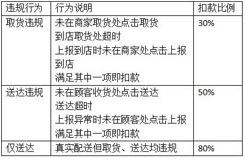
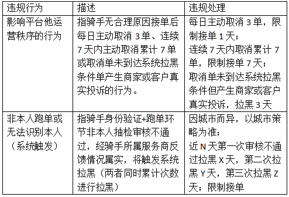

管理细则
管理细则
着装干净整洁，服装无明显破损及褪色，已有工服的骑手在截单时间内必须着工装，暂时没有工装的骑手着干净整洁服装即可；裤子不可短于膝盖，不可穿拖鞋上岗
面容：面对客户保持微笑，双眼平视，表情自然真诚，嘴角往上提呈月亮弯，露出6-8颗牙齿
头发：头发不能染色，刘海长度不能超过眼睛，鬓角修剪整齐；女士长发必须上盘并用发网固定
指甲：手指甲必须清洁并修剪整齐，不能留长指甲，指甲不能超过手指肉；女生不能戴假指甲和涂抹指甲油
胡子：男士不可蓄留胡须
言谈：口腔无异味
气味：身上无烟味、酒味等异味
1、配送过程中与商家、客户沟通或接听电话时要使用：“请”、“请问”、“谢谢”、“对不起”、“您好”、“麻烦您”等礼貌用语
2、配送过程 中遇到他人要主动打招呼问好
3、言谈应诚恳庄重，声调适度，不可油腔滑调
4、在工作场所商谈工作、接电话、打电话等要注意场合和环境，不要动作过大或声音过响，妨碍他人工作
5、在通道、走廊走动时要放轻脚步；在通道、走廊遇到老人或客人要礼让，不能抢行
6、按门铃的规范：按2-3下，停顿5秒，再按2-3下；敲门的规范：敲3下，停顿5秒，再敲3下
7、递交餐品或货物时，倾身15度，双手递餐给客户
8、如遇交警、公安或者是媒体记者采访、索要其他骑手信息、公司信息等，请转告对方公司联系电话，并及时将信息转给站长
以上条款所有内容如需解释或有疑问，请联系骑手所属服务商。
1.1电动车：干净整洁，无泥垢；车身无明显破损；电量充足；检查车闸制动、车胎、后视镜等
1.2外卖箱：确认外卖箱清洁，安装牢靠，无破损，图案无严重褪色；确保外卖箱门能牢靠关闭；确保外卖箱内有杯托；确保外卖箱内定期进行擦拭，以确保无异味
1.3外卖箱锁：骑手自行配备外卖箱锁，确保离开外卖箱时，外卖箱一直处于上锁状态
1.4外卖箱禁止存放任何的鞋子、衣服、裤子、雨衣
1.5手机及充电宝：确保手机及充电宝电量能足够一天班次使用
2.1必须在商家取货处点击取货
2.2必须在收货地点处点击送达
3.1商家出参餐慢，可上报到店，且必须在商家处点击到店；
3.2送达时，联系不上顾客取餐时需上报异常，且必须在顾收货处点击上报；
3.3上报异常后30分钟内顾客要求二次配送，骑手必须进行配送 ；
3.4送达超时的异常订单系统会自动生产系统申诉，2个工作日内进行重审，骑手无需再手动申诉；
3.5骑手未将餐品送至顾客手中前，不可点击“我已送达”按钮；
以上条款所有内容如需解释或有疑问，请联系骑手所属服务商
所有订单必须按照服务商跑腿员服务管理规则规定操作，未在取货地点点击“取货”按钮、未在送货地点点击“确认送达”按钮、到店及配送时间不符合要求的均只获得部分奖励。不符合配送规范的订单将按照订单邮资的一定比例扣除骑手的奖励，扣款原因会在订单详情中展示，扣款规则如下：
经核实被商家或顾客投诉配送问题的无法获得奖励
由于配送员个人操作失误（如忘记点取货、不小心点错送达等）导致订单审核不通过的无法获得奖励。
3、配送员自己下单自己抢单进行配送，无法获得奖励。
因配送员问题导致顾客退餐/退款的无法获得奖励。
外卖订单只接同一商家的订单视为商家小时工行为，无法获得奖励。
以上条款所有内容如需解释或有疑问，请联系骑手所属服务商。
2、其他类规则
说明：
因非骑手原因造成骑手被拉黑的，提供证据核实无误后，可申请解封。
以上条款所有内容如需解释或有疑问的，请联系骑手所属服务商。
使骑手能够快速了解平台的操作标准，快速成为“合格”配送员。
啄呗跑腿骑手
3.1骑手标准工作要求
3.1.1骑手仪容仪表要求：
1）着装：着装干净整洁，服装无明显破损及褪色，已有工服的骑手在截单时间内必须着工装，暂时没有工装的骑手着干净整洁服装即可；裤子不可短于膝盖，不可穿拖鞋上岗
2）面容：面对客户保持微笑，双眼平视，表情自然真诚，嘴角往上提呈月亮弯，露出6-8颗牙齿
3）头发：头发不能染色，刘海长度不能超过眼睛，鬓角修剪整齐；女士长发必须上盘并用发网固定
4）指甲：手指甲必须清洁并修剪整齐，不能留长指甲，指甲不能超过手指肉；女生不能戴假指甲和涂抹指甲油
5）胡子：男士不可蓄留胡须
6）言谈：口腔无异味
7）气味：身上无烟味、酒味等异味
3.1.2骑手行为举止及言谈话术
1）配送过程中与商家、客户沟通或接听电话时要使用：“请”、“请问”、“谢谢”、“对不起”、“您好”、“麻烦您”等礼貌用语
2）配送过程 中遇到他人要主动打招呼问好
3）言谈应诚恳庄重，声调适度，不可油腔滑调
4）在工作场所商谈工作、接电话、打电话等要注意场合和环境，不要动作过大或声音过响，妨碍他人工作
5）在通道、走廊走动时要放轻脚步；在通道、走廊遇到老人或客人要礼让，不能抢行
6）按门铃的规范：按2-3下，停顿5秒，再按2-3下；敲门的规范：敲3下，停顿5秒，再敲3下
7）递交餐品或货物时，倾身15度，双手递餐给客户；
3.2骑手核心任务及工作职责
3.2.1核心工作：
将啄呗跑腿商家的餐品（产品）准时、准确地呈递给客户，并在服务过程中展现出专业、有礼的服务水准；
3.2.2骑手工作职责：
3.2.2.1熟练掌握工作技能：
快速掌握配送区域内道路及商圈情况，以便快速到达客户、商家所在地；
在保障订单时效的基础上，合理规划配送路线及时派送；
准确核对小票和货品信息，并确保产品保质保量的被配送，注意餐具/餐巾纸、发票、包装袋的完备；
3.2.2.2树立优秀骑手形象，展现热忱服务：
每日进行车辆清洁、安全检查；外卖箱内外部清洁，确认箱体无破损；
保持整洁仪容仪表，面对客户态度谦恭有礼，按骑手标准配送流程完成履约配送，展现热忱服务；
完整执行骑手标准配送流程，遵守交通规则，安全骑行
3.2.2.3掌握异常处理技巧及时上报沟通：
按需求完成订单配送，及时完成送餐任务，不得以任何理由拒绝配送订单；
及时掌握路途中最新的交通变化和道路施工情况；
3.3骑手物料管理：
珍惜、爱护工作物料，妥善使用、保管，避免损坏、丢失；物料发生损坏丢失的，需要及时补全物料，确保上岗时物料配备符合标准要求；
3.3.2每日上岗前需检查内容：
1）电动车：干净整洁，无泥垢；车身无明显破损；电量充足；检查车闸制动、车胎、后视镜等
2）外卖箱：确认外卖箱清洁，安装牢靠，无破损，图案无严重褪色；确保外卖箱门能牢靠关闭；确保外卖箱内有杯托；确保外卖箱内定期进行擦拭，以确保无异味
3）外卖箱锁：骑手自行配备外卖箱锁，确保离开外卖箱时，外 卖箱一直处于上锁状态
4）外卖箱禁止存放任何的鞋子、衣服、裤子、雨衣
5）手机及充电宝：确保手机及充电宝电量能足够一天班次使用
3.3.3餐品放置指引
餐品放置应遵循大不压小、重不压轻的原则。
餐品放置应保证餐品不晃动为原则，可以通过使用隔板杯托、调整餐品位置，尽量保证餐品不晃动。
开口向上原则，所有餐品必须确保开口向上。
冷热分离原则，冷的餐品与热的餐品要分不同的保温箱进行放置。
预估餐品重量，确保所有餐品包装不被压变形。
多订单餐品按送餐顺序放置，先送的餐品放上面，后送的餐品放下面。
{kind=link}
{kind=link}
{kind=link}
{kind=link}
{kind=link}